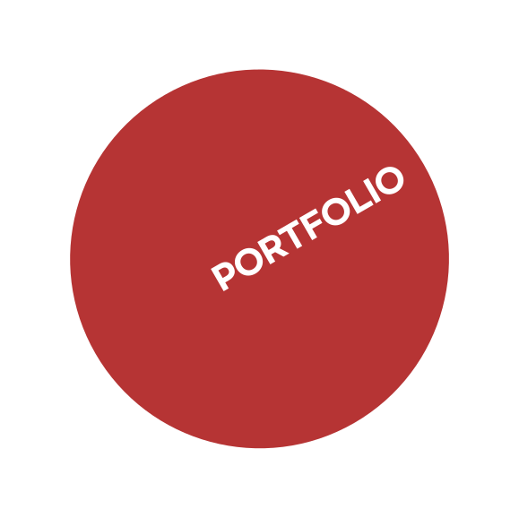
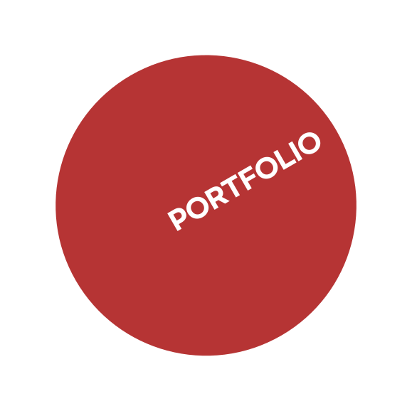
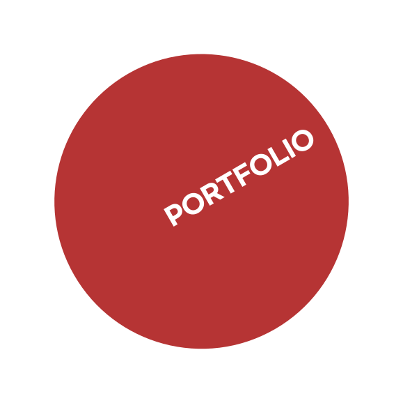
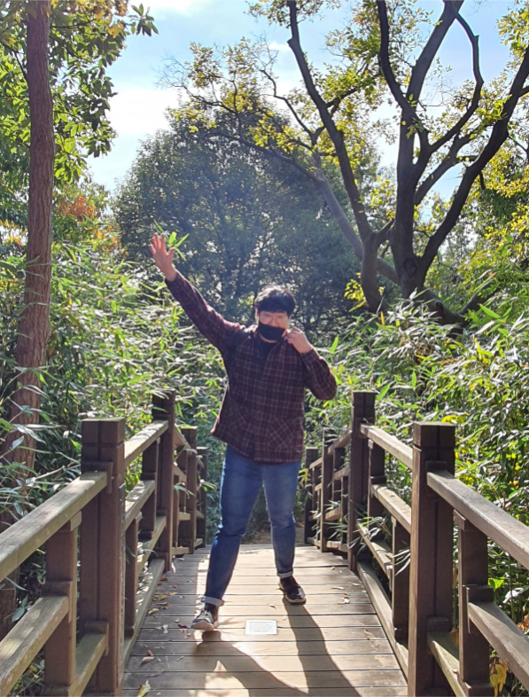

YOUNYC
 

HELLO


PORTFOLIO

1992.04.13
Hello, I am trying to be a creative and enjoyable front-end developer
안녕하세요 저는창의적이고즐길 수 있는 프론트 엔드 개발자가 되기 위해 노력하고 있는 윤여찬 입니다. 어려운일도 즐겁게 즐기며 해결 할수있도록 긍정적인 마인드로 공부 하고 있습니다. 프론트엔드 개발자의 길을 걷기 위해 좀 더 창의적으로 생각하고 여러 경험을 하기 위해 계속 노력하겠습니다.
안녕하세요, 저는 창의적이고 즐거운 프런트엔드 개발자가 되기 위해 노력하고 있습니다.
Hello, I'm Yoon Yeo-chan, who is striving to become a creative and enjoyable front-end developer. We are studying with a positive mind so that we can enjoy and solve difficult things. I will continue to think more creatively and try to experience many things to walk on the path of front-end developers.
De
ve
lop
er